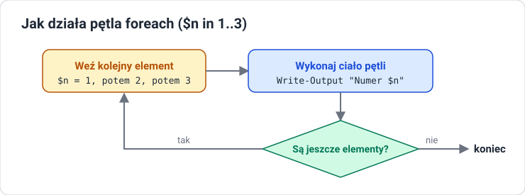

Lekcja 4 — Dane i skrypty
Cel lekcji
Po tej lekcji będziesz umieć sortować, liczyć, grupować i filtrować obiekty, tworzyć kolumny wyliczane, używać zmiennych i tablic, pisać instrukcje if i pętle, a następnie zbudować i uruchomić własny skrypt .ps1 z uwzględnieniem Execution Policy.
Cztery cmdlety do pracy z danymi
| Cmdlet | Co robi |
|---|---|
Sort-Object |
sortuje po właściwości; -Descending — malejąco |
Select-Object |
wybiera kolumny; -First 5 / -Last 5; -ExpandProperty — samą wartość |
Measure-Object |
liczy elementy; suma, średnia, min, max |
Group-Object |
grupuje po właściwości i liczy elementy grup |
Sort-Object
PS> Get-Process | Sort-Object CPU -Descending | Select-Object -First 3 Name, CPU
Name CPU
---- ---
MsMpEng 85,3
svchost 41,2
explorer 12,7
Get-Process | Sort-Object Name, CPU # kilka właściwości po przecinku
Get-Process | Get-Member | more # more dzieli długi wynik na strony
W more: spacja — następna strona, Enter — następny wiersz, q — wyjście.
Measure-Object i Group-Object
PS> Get-Process | Measure-Object
Count : 87
PS> Get-Process | Measure-Object WorkingSet -Sum -Average -Maximum
Count : 87
Average : 38520034
Sum : 3351242000
Maximum : 365629440
Property : WorkingSet
PS> Get-Service | Group-Object Status
Count Name Group
----- ---- -----
82 Running {System.ServiceProcess...}
94 Stopped {System.ServiceProcess...}
Select-Object i kolumny wyliczane
PS> $mb = @{
>> Name = 'MB'
>> Expression = { [math]::Round($_.WorkingSet / 1MB, 1) }
>> }
PS> Get-Process | Select-Object -First 3 Name, $mb
Name MB
---- --
conhost 6,3
csrss 4,9
dwm 38,2
- Kolumna wyliczana to para
NameiExpression. $_oznacza bieżący obiekt z potoku.1MBto 1 048 576 bajtów — PowerShell zna jednostkiKB,MB,GB.[math]::Round(liczba, 1)zaokrągla do jednego miejsca po przecinku.
Where-Object — wybieranie obiektów
Get-Service | Where-Object Status -eq "Running" # wersja krótka
Get-Process | Where-Object { $_.CPU -gt 10 } # wersja z blokiem
$_ to bieżący obiekt przepływający przez potok, a $_.CPU to jego właściwość CPU.
W PowerShellu nie ma znaków ==, > i < do porównań. Używamy operatorów z myślnikiem:
| Operator | Znaczenie |
|---|---|
-eq, -ne |
równe, różne |
-gt, -ge |
większe, większe lub równe |
-lt, -le |
mniejsze, mniejsze lub równe |
-like |
pasuje do wzorca z gwiazdką: -like "win*" |
-and, -or, -not |
i, lub, negacja |
Składamy polecenie: trzy procesy z największą pamięcią.
Get-Process | # pobierz wszystkie procesy
Sort-Object WorkingSet -Descending | # największa pamięć na górze
Select-Object -First 3 Name, WorkingSet # trzy pierwsze, dwie kolumny
Zmienne
$imie = "Anna" # zmienna zaczyna się od $
$liczba = 5
[int] $wiek = 17 # typ można narzucić w nawiasach
[string] $tekst = "abc"
[datetime] $d = Get-Date
$uslugi = Get-Service # zmienna może trzymać całą kolekcję obiektów
Cudzysłów podwójny a pojedynczy
Podwójny " " |
Pojedynczy ' ' |
|---|---|
| podstawia wartości zmiennych | traktuje tekst dosłownie |
"Cześć $a" → Cześć Anna |
'Cześć $a' → Cześć $a |
wyrażenie w $( ): "Dziś $(Get-Date)" |
używaj, gdy nie chcesz podstawiania |
Tablice
PS> $osoby = "Anna", "Piotr", "Ola"
PS> $osoby[0] # numer od początku, liczymy od zera
Anna
PS> $osoby[-1] # numer od końca
Ola
PS> $osoby.Count
3
PS> 1..5 # zakres tworzy ciąg liczb
1 2 3 4 5
Instrukcje sterujące
if / elseif / else
$liczba = 7
if ($liczba -gt 10) {
Write-Output "Duża"
}
elseif ($liczba -gt 5) {
Write-Output "Średnia"
}
else {
Write-Output "Mała"
}
Dla 7: pierwszy warunek jest fałszywy, drugi prawdziwy. Wynik: Średnia.
Pętle

# foreach — dla każdego elementu kolekcji
foreach ($n in 1..3) {
Write-Output "Numer $n"
}
# ForEach-Object — to samo w potoku
1..3 | ForEach-Object { $_ * 2 }
# while — dopóki warunek jest prawdziwy
$i = 0
while ($i -lt 3) { $i++ }
foreach działa na zmiennej, ForEach-Object — na obiektach z potoku.
Budowanie skryptów
Skrypt 1: rośnie krok po kroku
Skrypt 2: wolne miejsce na dyskach
# dyski.ps1
$dyski = Get-PSDrive -PSProvider FileSystem
foreach ($d in $dyski) {
$wolne = [math]::Round($d.Free / 1GB, 1)
Write-Output "Dysk $($d.Name): wolne $wolne GB"
if ($wolne -lt 10) {
Write-Warning "Malo miejsca na $($d.Name)"
}
}
- Wiersz 2: zmienna trzyma listę dysków (obiekty).
- Wiersz 3: pętla bierze dysk po dysku.
- Wiersz 4:
Freeto bajty — dzielimy przez1GBi zaokrąglamy. - Wiersz 5:
$($d.Name)wstawia właściwość obiektu do tekstu. - Wiersze 6–8: ostrzeżenie, gdy zostało mniej niż 10 GB.
Skrypt 3: bezpieczne sprzątanie starych plików
# sprzatanie.ps1
$folder = "C:\PS_Lab\Temp"
$granica = (Get-Date).AddDays(-7)
Get-ChildItem $folder -File |
Where-Object LastWriteTime -lt $granica |
Remove-Item -WhatIf
$granicato data sprzed 7 dni (metodaAddDays).- Potok zapisany w trzech liniach dla czytelności — linia kończy się znakiem
|. Where-Objectzostawia pliki starsze niż granica.-WhatIftylko pokazuje, co zostałoby usunięte. Pliki znikną dopiero po usunięciu tego parametru.
Skrypt 4: pilnowanie usługi
# pilnuj.ps1
$nazwa = "Spooler"
$usluga = Get-Service -Name $nazwa
if ($usluga.Status -eq "Running") {
Write-Output "$nazwa dziala"
}
else {
Write-Output "$nazwa stoi, uruchamiam"
Start-Service -Name $nazwa
}
Zmieniasz jedną zmienną i pilnujesz dowolnej usługi.
Cykl życia skryptu
- Napisz — w Notatniku lub ISE.
- Zapisz jako
.ps1(w Notatniku: Zapisz jako typ: Wszystkie pliki, żeby nie powstałskrypt.ps1.txt). - Sprawdź Execution Policy — czy wolno uruchamiać skrypty.
- Uruchom:
.\skrypt.ps1— kropka i ukośnik oznaczają „z tego folderu”. - Czytaj wynik i błędy, popraw i uruchom ponownie.
Execution Policy
| Polityka | Co wolno |
|---|---|
Restricted |
żadnych skryptów — domyślnie w Windows 10 i 11 |
AllSigned |
tylko podpisane |
RemoteSigned |
lokalne bez podpisu, z internetu tylko podpisane — domyślnie w Windows Server |
Unrestricted |
wszystko, z ostrzeżeniem |
Bypass |
bez blokad |
Jak nie zepsuć sobie systemu
-WhatIf— pokazuje, co polecenie by zrobiło, bez wykonania.-Confirm— pyta o potwierdzenie przed każdą operacją.Remove-Itemusuwa bez kosza — najpierw sprawdź, co pokazujeGet-ChildItem.- Uprawnienia — zmiany w systemie wymagają okna administratora.
- Środowisko testowe — nowe skrypty uruchamiaj najpierw na maszynie ćwiczeniowej.
Skróty klawiszowe
| Klawisz / sytuacja | Efekt |
|---|---|
| Tab | dopełnia polecenia i parametry |
| strzałka w górę / w dół | przegląda historię poleceń |
F7 lub Get-History |
lista historii |
| Ctrl+C | przerywa działające polecenie |
| czerwony tekst | błąd: przeczytaj, co i w którym miejscu się nie udało |
Sprawdź się
1. $_
Co oznacza $_ w poleceniu Where-Object { $_.CPU -gt 10 }?
2. Cudzysłowy
Jaka jest różnica między "Cześć $a" a 'Cześć $a'?
3. Uruchamianie skryptu
Jak uruchomić skrypt skrypt.ps1 z bieżącego folderu i po co jest kropka z ukośnikiem?
4. -WhatIf
Do czego służy parametr -WhatIf i kiedy warto go użyć?
5. Modyfikacja skryptu
Zmień skrypt dyski.ps1 tak, aby oprócz wolnego miejsca wypisywał też procent zajętości dysku. Wskazówka: Used i Free to właściwości tego samego obiektu.